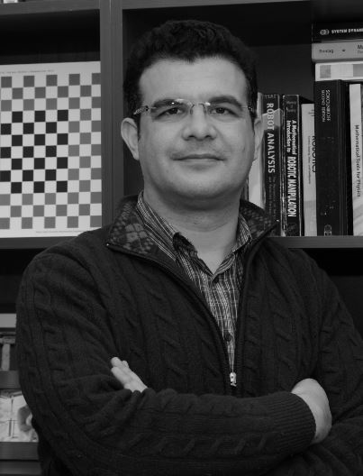

Dr. Levent Çetin
Yardımcı Doçent
İzmir Kâtip Çelebi Üniversitesi
Mühendislik ve Mimarlık Fakültesi
Mekatronik Mühendsilği Bölümü
Çiğli/İZMİR
--------------------------------------------
t: +90 232 329 35 35 dahili:3768
@: levent.cetin-at-ikc.edu.tr